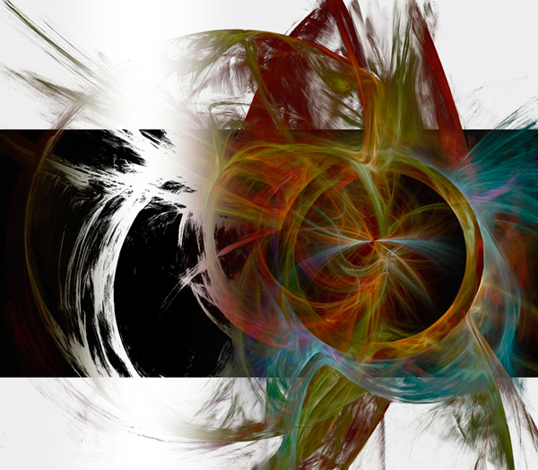
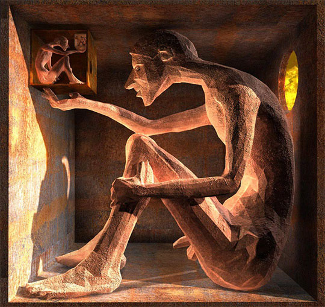
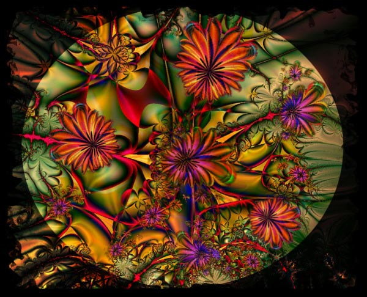
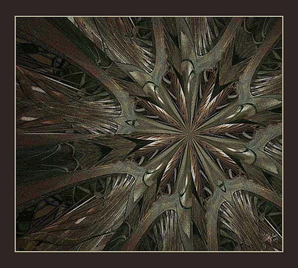
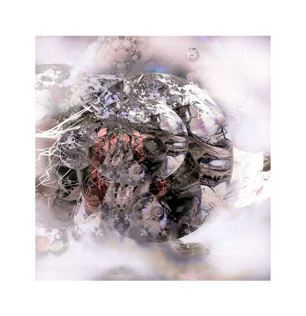
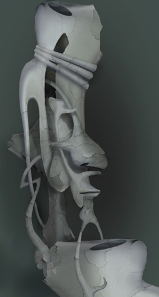
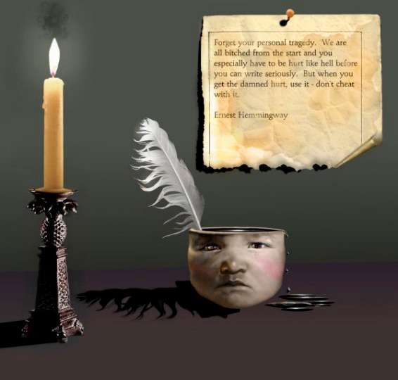
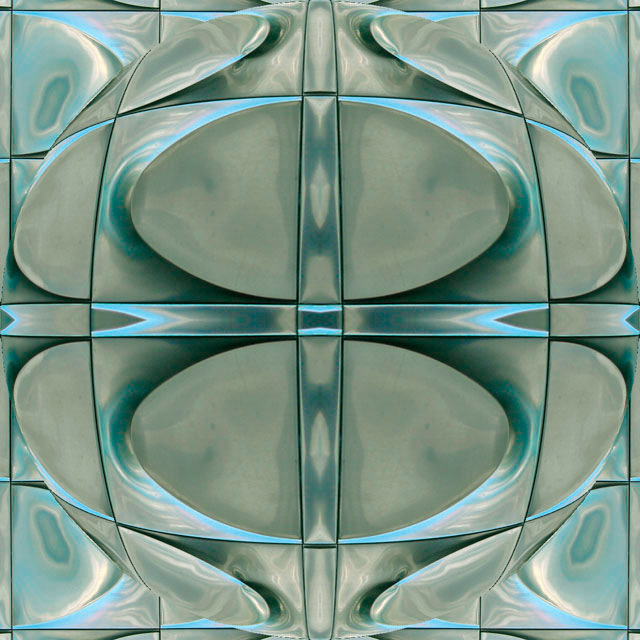

Quantum - 4 
by Ivan Domeyko
07/11/2021
The Economy of Polygons 
Ecce Homo
by Thomas Demuth
07/12/2021
Mirror001
by Eva Gyorffy
07/13/2021
Dead Nature 
by Paolo Galuppi
07/14/2021
One Holon Flame 
by Juliette Gribnau
07/15/2021
Translucent
by Shawn Henry
07/16/2021
Bandit 
by Andrew Hindman
07/17/2021
98tnfzse7 
by Jason Kelly
07/18/2021
The Written Word 
by lamb
07/19/2021
GAIA 
by Charlene Lancel
07/20/2021